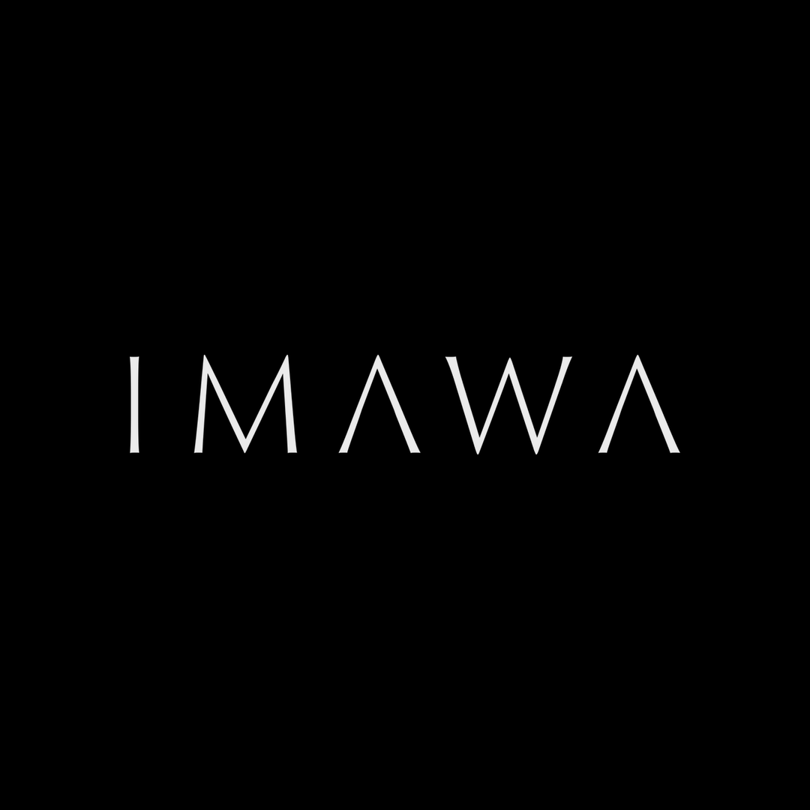
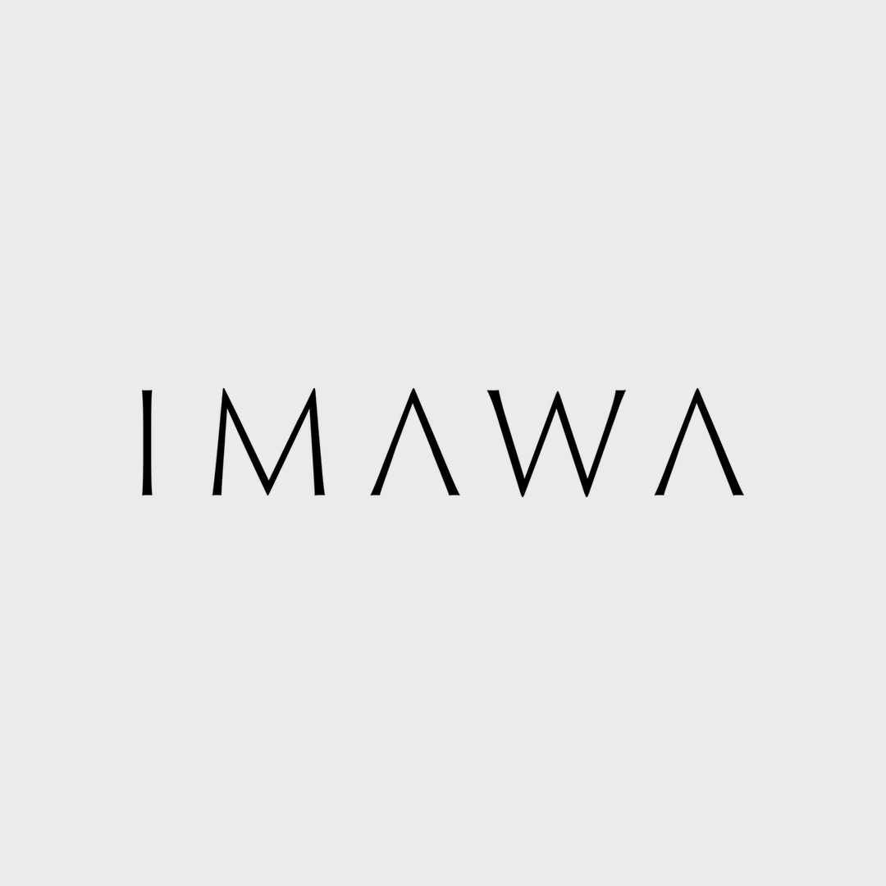
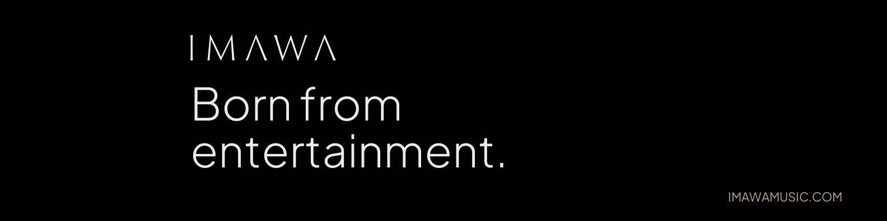
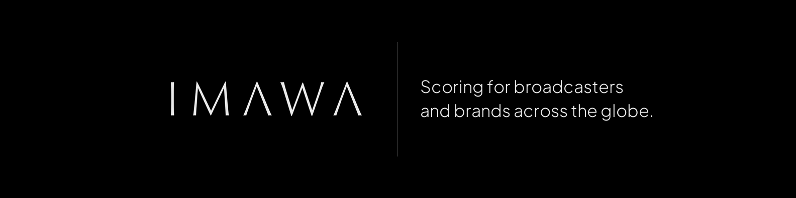
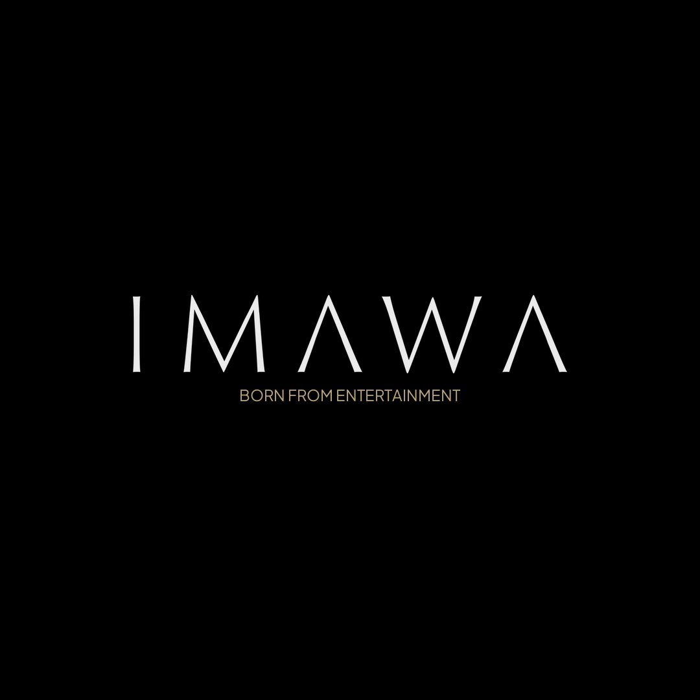
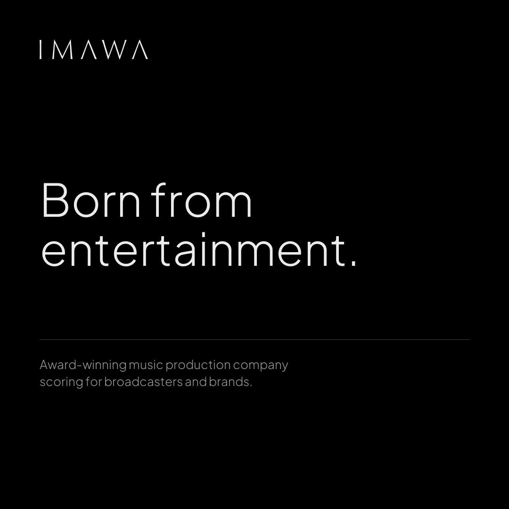
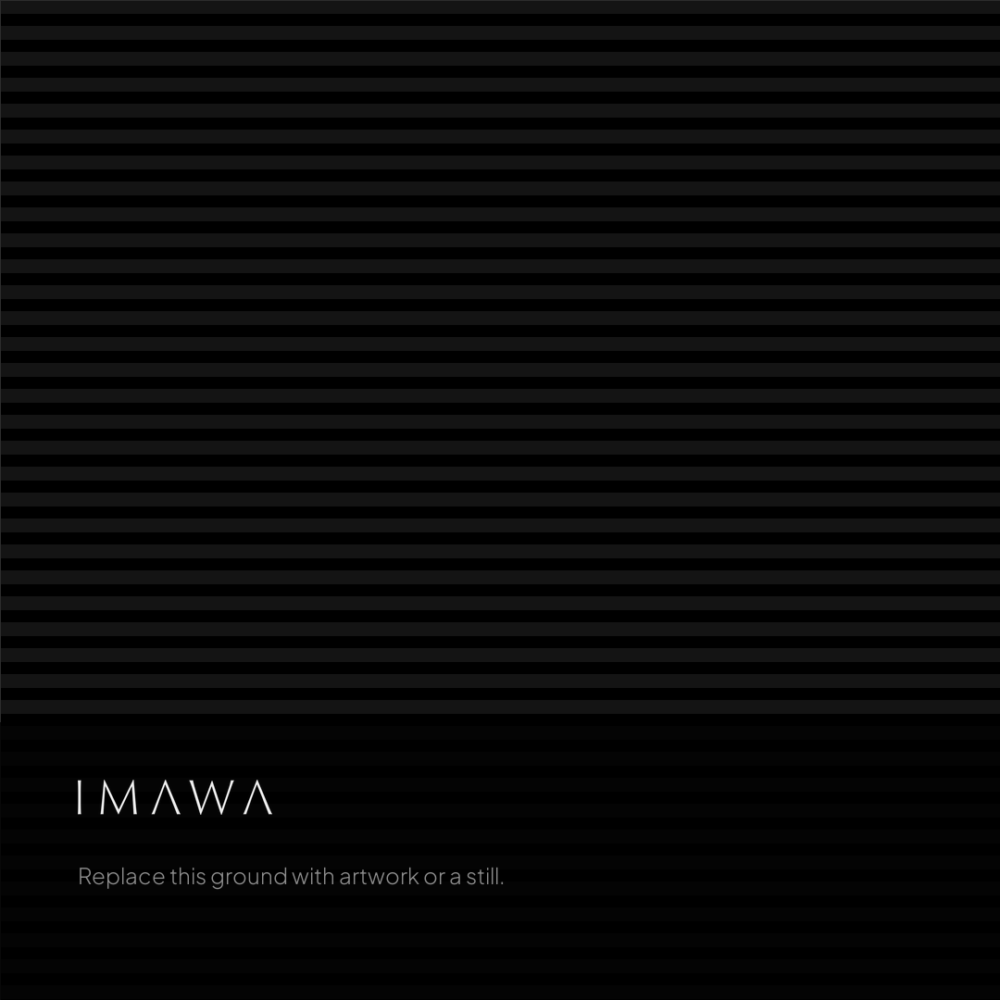
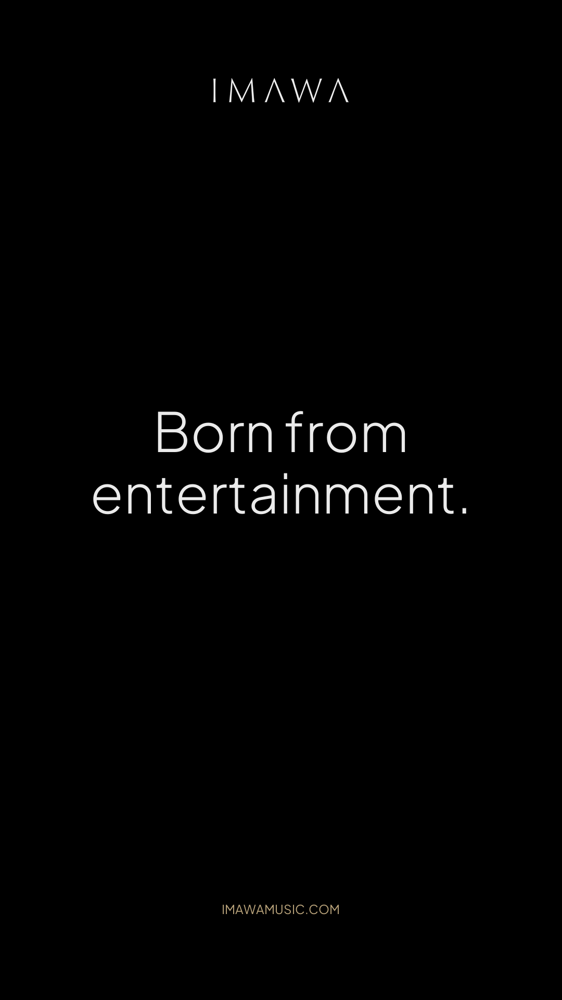

Everything needed to put IMAWA out in the world consistently — the mark, the palette, the type, ready social assets and email signatures. Every asset on this page is downloadable at the size it should be used.
01
A wordmark, nothing else — there is no separate symbol. It is drawn with very fine strokes, so it needs room and enough size to stay legible. Never place it on a busy image without a scrim behind it.
Use these for print, large format, or anywhere the mark will be scaled. Both carry transparency.
02
Three values, sampled from the original logo lockups. Black carries almost everything; cream is an accent and should stay one — labels, rules, small emphasis. Paper is the type colour on dark.
03
Plus Jakarta Sans throughout, and mostly at Light. It is free on Google Fonts, so anyone can install it without a licence.
05
Built as a table so it survives Gmail, Outlook and Apple Mail. The mark is black on a transparent background, which is what mail clients need — they render on white, and a light logo would vanish.
|
Agustín Iacona
Founder · Composer
|
|
Ary Werthein
Founder · Composer
|
|
Full name
Role
|
Press copy — the HTML is written to your clipboard with absolute image paths.
Press copy — the HTML is written to your clipboard with absolute image paths.
Press copy — the HTML is written to your clipboard with absolute image paths.
06
Short on purpose. Six rules cover almost everything.
{kind=link}
{kind=link}
{kind=link}
{kind=link}
{kind=link}
04
Social
Sized for each placement and ready to upload. Instagram and LinkedIn take the same square avatar.
Avatars — 1080 × 1080


LinkedIn covers — 1584 × 396


Post templates — 1080 × 1080



The third is a frame, not a finished post: drop a still or artwork behind it and keep the dark band so the mark stays legible.
Story — 1080 × 1920
